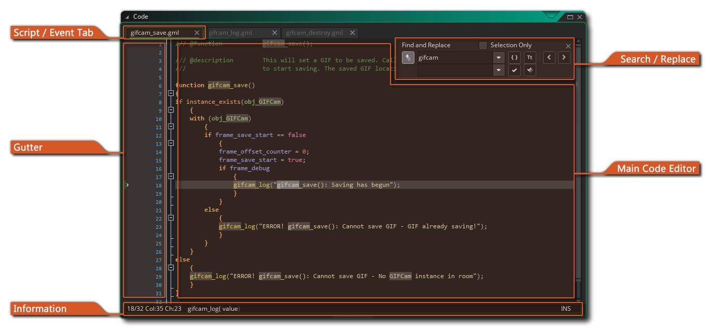
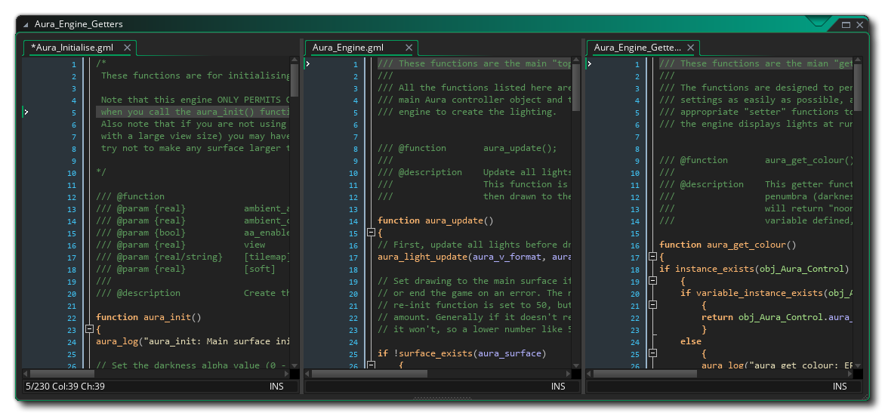
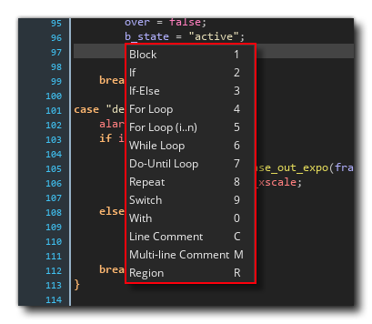
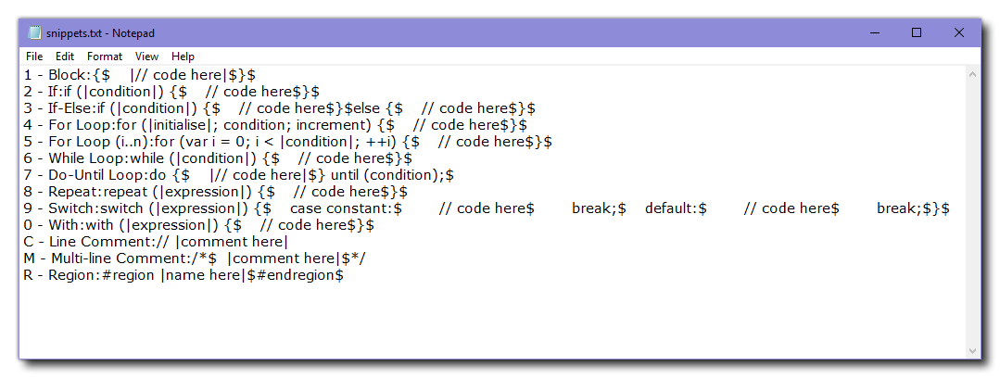

This section deals with the script editor (also called the text editor) which is where you type in all the code that your game will require to run. This editor is used for creating custom script assets, as well as for coding object events, for adding room creation code, and for many other things, and as such, this section simply details how the script editor works, and not how to create script assets nor how to use Drag and Drop™ to make scripts. For that please see the following sections:
The script editor is where you write your GameMaker Language code, which is the built-in programming language that GameMaker Studio 2 uses (see the GML Reference section for more details). Once you become more familiar with GameMaker Studio 2 and want to use it to its fullest extent, it is advisable to start learning to use this language, as it greatly expands your possibilities when creating games.
A script asset can be named by right-clicking  on it
in the Asset Browser and selecting Rename, but note that the
script name must conform to the scripting rules for functions, so
they can only be alpha-numeric, must start with a letter, and the
only symbol they can contain is the "_" under-bar symbol. The
script editor in other places cannot be renamed and will have a
name specific to what is being edited, like an object event for
example.
on it
in the Asset Browser and selecting Rename, but note that the
script name must conform to the scripting rules for functions, so
they can only be alpha-numeric, must start with a letter, and the
only symbol they can contain is the "_" under-bar symbol. The
script editor in other places cannot be renamed and will have a
name specific to what is being edited, like an object event for
example.
When you open the script editor window it will have the following options and layout:
The script editor opens in a window with tabs across the top to let you have multiple scripts in one window (although this behaviour can be changed from the Preferences to give a new window to each script). You can click on a script and then drag it to re-order the tabs, or if you prefer, you can pull it out of the current window and place it on the workspace to create a new window for that script (or add it to a different window), and you can also maximise the script editor to create a new workspace too. If you drag a script tab out of the IDE window, then a new IDE will be spawned to hold this script resource, and it can be used as you would the Main window.
Note that if you are editing code from an object event in the script editor and you have maximised the script editor or have it on a separate window or workspace, then the right-click
editor menu will have some extra options:
- Restore to workspace: This will take the script editor out of a maximised/workspace state and re-chain it to the object in the workspace.
- Go to Object: This will take you to the workspace that the object with the code is on and focus on the object.
- Add /Open Event: This permits you to add a new event to the object the current script belongs to, and will open a new code tab in the Script Editor for the added event. If the event selected already has code in it, then this will be opened in a new tab.
For information on the rest of the right-click
The Gutter is used to show the line numbers for your code and also to convey some specific pieces of information. Most importantly, if you make mistakes or construct the code incorrectly, the GameMaker Studio 2 IDE will inform you of the issue by flagging the line of code that is causing the issue with a red exclamation mark . You can then mouse over the symbol to get a brief description of what the issue is:
The gutter will also mark any line of the script that has had a breakpoint added. A breakpoint is simply a place in the script where you want the debug module to pause the execution of your game when it is reached. You can toggle a breakpoint from any line of any script or object event by pressing "f9" or using the right-click
Finally, the gutter will also show any bookmarked items too. To bookmark a line of code simply hold down
/ +
+ Number (from 0 to 9), and this will permit you to skip back to this line of code from anywhere in the IDE simply by using
While working in the script editor, you can press
Here you can perform a local search for the keyword you input and once you have entered your search term, you can then use the arrows at the top right of the search window to skip from one found term to the next in the script. You can change how the search operation is carried out by toggling the following buttons:

Whole Word Only: When you toggle this, the search function will only highlight those strings that match the whole input string. For example, with it off a search for "random" will show up all words that contain this string - like irandom(), or randomise() - while toggling it to on would only show the function random(). 
Case Sensitive: When this option is toggled, you are telling GameMaker Studio 2 to check not only the contents of the search string, but the case too. For example, if you have a sprite called "spr_Dog" and do a search for "dog" with this toggle off, then the sprite string will be highlighted, however if the toggle is on then it won't since "Dog" is no longer considered the same as "dog". If you have opened the search window using
to open it. Once open you can then enter a string that will be used to replace any given search string, using the following buttons to perform the action:

Replace Next: Clicking this will replace the next search string found in the script with the given replace string. Note that the "next" term is considered the next one after the current cursor position, and you can skip to different ones using arrow buttons at the top right of the search window. 
Replace All: Clicking this will replace all examples of the search string within the script using the given replace string. Note that if you want to do a global search (ie: search the whole project rather than the current script), then you can press
The main script editor is where you'll write all your code to create the script or fill an object event. Scripts and code events are written following the general rules for GML syntax (see the GML Overview section for more details), and you can get help while writing your scripts from the auto-complete window:
This window will pop up while you are writing your code (normally after a slight pause, but this can be set in the Preferences) and give you a selection of "best-fit" answers in alphabetical order. While using the code editor you can click and drag the mouse to select a row of code or hold down
then click and drag to select columns of code. Anything selected in this way can then be copied, cut and pasted using the standard window shortcuts of
It is worth noting that you can comment your code in various ways. Commenting your code is very important for maintaining productivity as it keeps things clear and separates sections of code in such a way that it is obvious what each part does and why it is there. It also means that if you are working in a team then you can leave notes for other members and that they will know exactly what you have done or what a specific section of code is for. Even if you are a solo developer, leaving comments for your code is important, especially if you have to leave the project and come back to it at a later date.
Commenting your code is simple, as you just have to use "//" before any line of text or you can comment out whole paragraphs by using "/* text here */". There are even two keyboard shortcuts to comment and uncomment selected lines of code:
Scripts can also have certain JSDoc style comments added so that when you use the functions they define in your code they show up in auto-complete along with their arguments and other details. you can find out more about this from the section JSDoc Script Comments for more information.
By default all code that is written will have code folding icons beside each set of matching braces {}. These take the form of a little plus + or minus - icons, and clicking on these will "fold" the code within the matching braces so that it takes up less visual space. You can also manually set code folding regions using the special #region tags to mark a section of code. How this works is that you add a #region tag (along with any comment text) to the top of a section of code and then add a corresponding #endregion tag to the bottom of the section and then you can "fold" the code, ie: hide it away so you can cut down on the number of lines of code visible in the editor at any one time:

The actual code looks something like this:
#region This is an example region
width = sprite_get_width(sprite);
height = sprite_get_height(sprite);
xoff = sprite_get_xoffset(sprite);
yoff = sprite_get_yoffset(sprite);
#endregion Further comment here if requiredAs you might have noticed, parts of the script text are coloured. The script editor "knows" about existing objects, built-in variables and functions, etc. and colour codes them accordingly. Colour-coding helps a lot in avoiding mistakes as you can see immediately if you have misspelled some name or use a keyword as a variable, or have a syntax error. However, if you don't like the colour coding, in the Preferences you can switch it on and off (you can also use F10) as well as customise the colours that are used.
You can right-click
Apart from the regular functions you'd expect to cut, copy and paste lines of code you also have the option to comment or uncomment any selected text, add or remove indents, as well split the code window into 1, 2 or 3 separate panes (note that the options relating to #regions will not be available if you have not defined any in the code being edited). These last options will split the window into different parts where you can then drag a script and have it show alongside the other ones for comparing and editing. 
This is exceptionally useful for comparing two scripts or for viewing connected scripts at the same time, without needing another window or having to switch constantly between tabs. The other options in this menu are to toggle a breakpoint for use with the Debugger, and to convert the GML code into DnD™ or vice versa. Note that if converting code to DnD™, then it will not create individual actions for each line of code, but rather use a single code action to hold everything that was previously in the event or script.
The information bar at the bottom of the IDE shows you the current line number you are on and the position along the line. It is also where you can see the code helper, which is a line of text that shows the function you are currently editing along with the arguments it requires. As you fill in the function in the editor, the arguments will highlight to show you which one you are currently editing. If you have used the JSDoc Script Comments within a custom script then the information you have supplied will also show here.


Code Snippets
A very handy tool you have at your disposal when editing your scripts is the use of Code Snippets. When using the script editor, you can press F4 to open the code snippet pop-up, which permits you to select one of the commonly used code methods from a list: 
From this window you can select with the mouse the snippet to use, or you can press the associated hotkey listed on the right. This will add the snippet to your code for editing.
You can also define your own code snippets if you want to. Before doing this, you'll need to create a file called "snippets.txt" in one of the following directories:
- Windows: %ProgramData%\GameMakerStudio2\User\
- macOS: /Users/Shared/GameMakerStudio2/User/
This folder is not modified during an update to GameMaker Studio 2, so your edited file will remain intact (but any edits to the base snippets file in the install directory will be reverted).
Once the file is created in the User directory, you can edit it with any text editor following these rules:
- Each snippet has to be on a separate line (there should be no
blank lines)
- Each snippet must start with the hotkey to be used followed by
"-" and then the name of the snippet (which is what is shown in the
menu) followed by a colon ":", eg:
I - Instance Create:
After the colon you add the snippet of code:
I - Instance Create:instance_create_layer(x, y, |layer|, object);
The code that you add must also follow a specific format where:
- All code is on a single line
- You use "$" for a newline
- You put the text that needs to be selected first between "|" symbols (the cursor will select this text for editing when the snippet is added)
See the examples that are already in the base snippets file to see how it is set up following the rules above. You can find the base file in the GameMaker Studio 2 install directory:

- \GameMaker Studio 2\TextEditor\snippets.txt